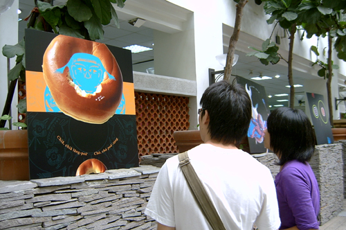
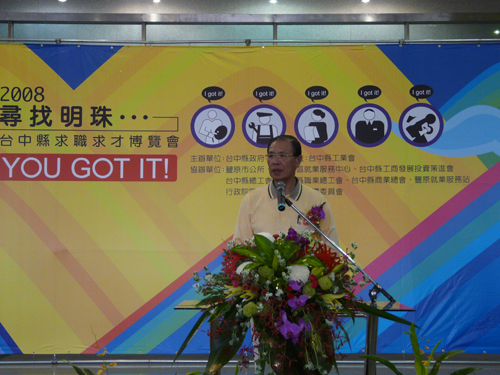

實習時間:97/7/14~97/8/29
一、實習心得:
去了實習公司以後，發現出外討生活真的是很不容易的。我在學校做一張海報，製作期可能長達半個學期，慢慢磨，慢慢修。但是到了公司以後，一天內至少要完成一張，這是根據公司的標準，所以要達到這樣的境界，真的是要看很多，做很多，隨時觀察才能累積出來的經驗。
設計是一種服務業，往往因為客戶的一句不滿意，而全面翻盤自己的作品，所以一開始的溝通是很重要的
實習的最後一天，我們開了一個小型檢討會，為自己這次的實習經驗打分數，我覺得我最大的缺點是閱讀的不夠多(因為公司裡面有一個小型圖書館，設計書超多的)，但是在公司內上班的小姐卻跟我說，我是問題問的不夠多，在發現問題的時候不應該是低頭猛苦思，而是應該積極的去尋找答案，吸取別人的經驗。積極度我還要再加強。
二、實習成果:
2008尋找明珠就業博覽會 負責場部 圖為場部後之景


|